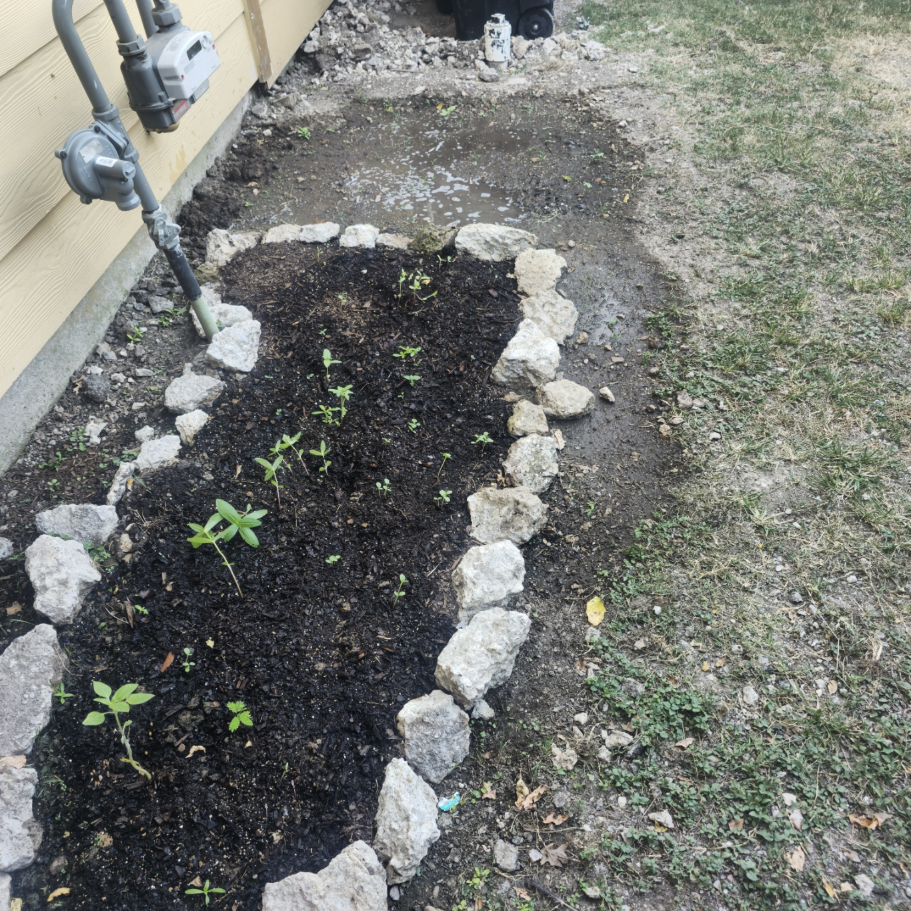

A bit on me...
I'm Leonardo Pena, but you can call me Leo. I've been a
student here for a while and transferred from San Jac,
where I completed most of my pre-requisites. I'm taking
this course to better myself in Web Programming.
.png) I become acquainted with Web Programming (Javascript,) through a toy project I made this summer,
where a character said a certain word over the course of 10 minutes,
another video where he says it for 3 hours. My front end was Javascript using chart.js, my back end, or in this case, native application was
Python. It turned out alright, but It got me wanting to do more in my field of study.
I become acquainted with Web Programming (Javascript,) through a toy project I made this summer,
where a character said a certain word over the course of 10 minutes,
another video where he says it for 3 hours. My front end was Javascript using chart.js, my back end, or in this case, native application was
Python. It turned out alright, but It got me wanting to do more in my field of study.
While continuing web programming is a nice way of learning what else I can from this field,
I also want to try mobile development, and even find out what's the deal with cloud development. For programming languages, I've used some Javascript, HTML, CSS, Python, C++, and mySQL. I've also tinkered with Kotlin and Java by messing with android studio, but it's not something I've
used recently. While computer science is a major where programming is put in you and everyone feels they need to recreate apple's or amazon's systems through a project, sometimes just making something you like can help, even better is when you have the soft skills that make you feel human, like in my case where explaining
my silly project got some eyes on me.
A few more tidbits on me. I enjoy experimental and hauntology based music (Nowhere at the Millennium of Space: Redux, Forevermore, and Nevermore, Everywhere at the End of Time). I exercise in my own time and read, and have recently got into gardening where I have begun to grow a variety of flowers (Zinnias, Sunflower varieties, Cosmos, and so on).

So far...
My current courses are:
They've been ok, been busy with this but unable to make time for anything else, just when I think I have time for something, boom! Something pops up. Sad.
Here's a table of what I've been able to read so far, to keep track from forgetting.
| Author |
Book |
Genre |
| Varlam Shalamov |
Kolyma Stories |
Short Stories |
| Cormac Mcarthy |
Suttree |
AutoFiction |
| Flannery O Connor |
Collected Stories |
Southern Gothic |
I need a job.